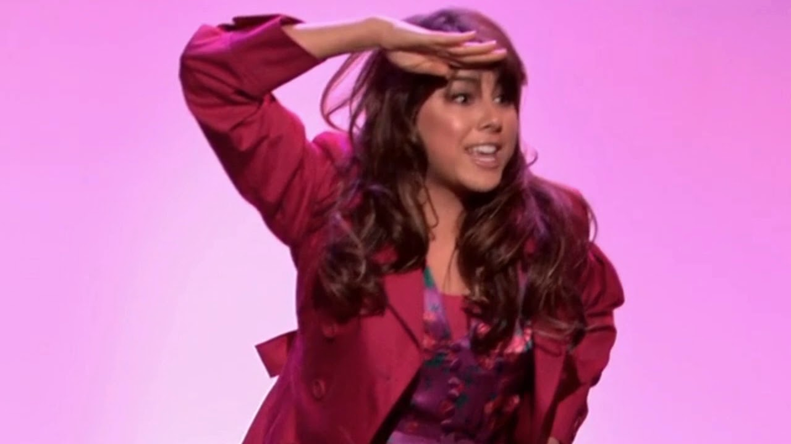

TRINA VEGA FAN PAGE
(possibly made by Trina Vega herself)

Trina Vega, the best out of the Vega sisters is currently studying at the prestigious school, Hollywood Arts. She is currently taking classes in acting and in singing. She has had seven singing coaches quit on her within the span of a few years yet she persists and continues her dream of becoming famous. She has already starred in various hit productions such as her One Woman show that she wrote, produced, and starred in. While her friends are often rude to her, it's only because they are jealous of her talent. All of the guys at school are obsessed with her but they don't show it because they are intimidated by her striking appearance. When she walks into a room, everyone is looking at her with an annoyed look because they know they are about to get outshined. No one can stand to be in the precense of such an amazing women, not even her parents which is why they always try to avoid her. That's ok because they say to only be friends with people who are on the same level as you and for Trina Vega that's only "Me, Myself, and I."
Things Trina Vega Is! ;)
CLICK TO WATCH SHECAGO
Here is my BEST friend at Hollywood Arts
He's almost as famous as me

(the one on the left)